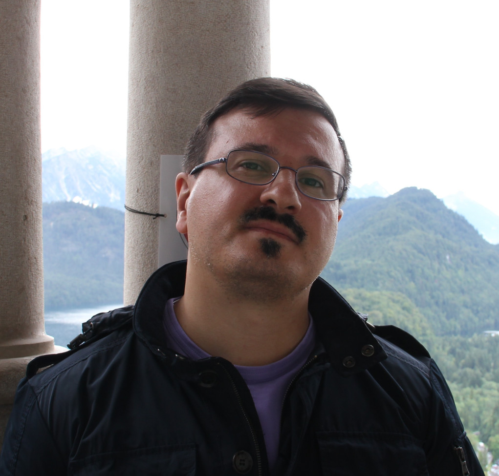

Paolo Sonego |
|

Paolo Sonego has been working as RNASeq and NGS data analyst at Fondazione Edmund Mach (Computational Biology Unit ) in San Michele All'Adige (Trento) from the 1st of February 2013. He graduated from Università di Bologna in Physics with a thesis regarding the design of classifiers capable of distinguish populations of Leukemia patients with different prognosis based on their cytofluorimetric profiles. He prosecuted the project started in his thesis in the Clinical and Experimental Hematology Research Unit at Centro di Riferimento Oncologico in Aviano (CRO) applying machine learning methods to the analysis of data from patients affected by B-cell chronic lymphocytic leukemia (B-CLL). In 2006 he joined the Protein Structure and Bioinformatics leaded by Dr. Sandor Pongor at International Centre for Genetic Engineering and Biotechnology (ICGEB) in Trieste. During the time he spent at ICGEB his main focus was in benchmarking state of art machine-learning algorithms on biological datasets in order to create datasets tailored to biological problems that could be used by practitioners to test their algorithms and show how well state of art machine algorithms techniques performed on the selected data. Between 2008 and January 2013 he was in charge of the Bioinformatics Service for the analysis of high-through data, mostly microarrays and RNA-Seq for a private company in Trieste. During this period he had the opportunity to collaborate with Dr. Sigalotti at CRO on the characterization of the methylation profiles of patients affected by melanoma. Paolo's interests are mainly in data mining and machine learning techniques applied at high-throughput data from biology.
|